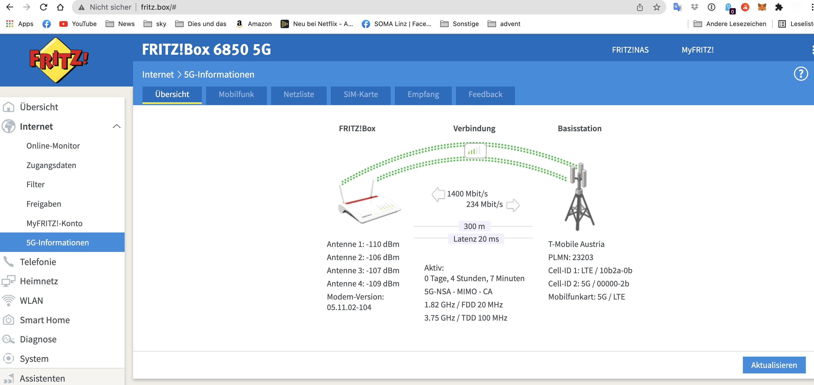

Es ist einfach ein schlechter Witz. Wenn man eigentlich eine 500 mbit Leitung gebucht hat. Und wegen Netz zählen Überlastung. Nicht einmal die einfachsten Dinge wie Alexa oder Musik streamen gehen
Habe gerade mit der magenta Technik telefoniert.
Das Problem ist altbekannt, die Funkzelle die für mich zuständig ist ist wieder mal heillos überlastet.
Magenta Gold mobil hat eine sehr gute Priorisierung deswegen gehen hier Daten über die Leitung.
500 5G Internet für Zuhause. Ist in der Priorisierungsklasse ganz weit unten deswegen mach die Leitung zu.
Jetzt ist es so das ich bis Mitte November 2022 noch Mindestvertragsbindung habe.
Schriftlich kann man sich ja momentan nicht an Magenta wenden und die Service line schließt um 18:00 Uhr
Meine Hoffnung ist dass jemand von magenta mit läst.
Hat jemand Erfahrung mit Kulanzlösungen?
Von mir aus gebe ich das Modem dass ich für den Vertrag bekommen habe auch gerne zurück.
Über die Community werden solche Themen nicht gelöst, das es eigentlich ein User helfen User Forum ist.
Geht's um den Privaten Vertrag oder Firma?
Es ist ein privater Vertrag.
Was mich wurmt. Wenn ich mit dem Handy unterwegs bin. Sehe ich was möglich ist mit 5G. Kaum bin ich bei mir zu Hause. Ist diese Funkzelle immer überlastet sobald es auf der B1 Linz – Ebelsberg Stau gibt.
Seit mehr als zwölf Monaten warte ich das mal Genter endlich die zweite Funkanlage auf 5G um rüstet.
Doch bis jetzt nichts, wegen Corona oder Sonnenschein oder einen Blödsinn was ihnen sicher noch einfällt.

Das ist das was ich in der FRITZ!Box selber sehen kann. Das sind schon die besten Werte die ich nicht hin bekomme.
Das andere Problem ich wohne an scheinend im schwarzen Loch. Laut.
Obwohl ich mitten in Linz wohne gibt es laut A1 maximal 40 M Bit über den Klingeldraht möglich.
Denn das war die andere lösen die sie mir bis Anbieten wir machen Ihnen Festnetz Internet.
mit heisen 40 mbit.
Wenn man weiß von einem halben Jahr ist die ganze Straße hier auf gegraben werden, wegen einen neuen Kanal.
Die Stadt Linz war aber leider zu dämlich dass die Glasfaser gleich mit verbaut hätte.
Deine Empfangswerte sind teils aber auch am Limit. Mit weniger als -110dB ist die Signaldämpfung schon recht hoch.
Hast du mal getestet, die Box raus auf das Fensterbrett zu stellen und schauen, ob da möglicherweise mehr geht? (nur zum testen)
Also Wie ich den Vertrag abgeschlossen habe hat sich das Modem noch im Wohnzimmer stehen. Dann hieß es der Sendemast der Nähe am Wohnzimmer ist es leider sehr alt und kann nur GSM/UMTS / LTE
Ich sollte doch bitte das Modem im Schlafzimmer stellen. Das wäre näher an der B1 wo der ausgebaute Sendemast steht.
Bild sieht man sie steht jetzt schon am Fenster. Aktuell ist es auch so wenn ich auf magenta AT meine Adresse eingeben. Heißt es 5G ist an Ihrem Standort nicht verfügbar
und wie sieht der empfang beim offenen fenster aus?
Denn zwischen den häusern gibts sicher massenhaft signalreflexionen
Sind im Schnitt 100-200 M Bit mehr drinnen. Da muss der Funkzelle aber auch leer sein. Tagsüber kommst du nicht über 200 M Bit hinaus
vor 2 Minuten schrieb lind:Sind im Schnitt 100-200 M Bit mehr drinnen. Da muss der Funkzelle aber auch leer sein. Tagsüber kommst du nicht über 200 M Bit hinaus
tagsüber 200 Mbit...? Das ist ja eh ein Traum??
vor einer Stunde schrieb Christian_E:tagsüber 200 Mbit...? Das ist ja eh ein Traum??
haha Ja und nein zu klein. Wenn ich jetzt einen billigen Tarif hätte. Wo drinnen steht Achtung sie erreichen maximal 200 M Bit alles okay
Ich hab Ab EXTRA gigerkraft 5G 500 um 60 Euro Bestellt.
Dadurch dass ich magenta Mobile Gold dadurch wird mit magenta eins irgendwas billiger.
Die ersten Tage und Wochen funktionierte es auch relativ gut.
Nachdem ich das Modem im Schlafzimmer gebracht habe und immer am Fenster stehen ließ.
Die Probleme fingen erst mit der Pandemie 2020 an.
Seit die Leute das Internet für zu Hause mehr nutzen und die Siedlung einfach schlecht mit klassischen Festnetz Internet versorgt ist bricht regelmäßig die Funkzelle zusammen.
Ich weiß jetzt nicht wie es bei dir oder anderen ist.
Doch ich bin Heavy User Ich weiß was ich bestelle ich weiß was ich will kommen.
Spiele, OS Update wenn dicke Pages kommen Will ich die schnell haben.
Online spielen und die Ping ist noch mal ein anderes Problem.
Möchte ich einfach gern eine schnelle Leitung nutzen.
Für das Tagesgeschäft wie Netflix, Spotify, E-Mail.
Fallen so starke Schwankungen nicht so schwer ins Gewicht.
Doch wenn ich monatlich über 100 € an magenta bezahle möchte ich gerne auch funktionierendes Internet. Dass das Internet bei Ihnen funktioniert sehe ich will mein Handy bin ich in Linz unterwegs bin. Da wo das Netz ausgebaut ist funktioniert.
Alles klar - verstehe....
Ja mit der Pandemie wurden die Netze massive ausgelastet und wiederholt überlastet.
Ich gehe mal davon aus, dass in der Nacht deutlich höhere Werte erreicht werden oder?
Hast du auch bessere Werte, wenn dein Modem testweise draußen steht?
Ja so ab Mitternacht. Bei offenem Fenster im Sommer sind die 500 mbit drinnen im Regel Fall in der Nacht bei geschlossenem Fenster reichen.
400 mbit
Ich hab jetzt eine schriftliche Antwort bekommen von Magenta was meint ihr :
Sehr geehrter Herr H.
vielen Dank für Ihr E-Mail.
Bedauerlicherweise gibt es an Ihrem Standort keine 5G Netzabdeckung, nur LTE. Da hier ein Auslastungsproblem besteht, wenden Sie sich betreffend einer außerordentlichen Kündigung bei der SerivceLine: 0676/2000.
Zwei Sachen.
Ich habe einen 5G Tarif abgeschlossen. Jetzt sagen Sie ja bei ihr nichts ist technisch nicht in der Lage. Sollte die außerordentliche Kündigung über die Service line eine gemähte Wiese sein?
Bei der Hotline hat man nichts schriftliches in der Hand.
Und wenn ja welche Garantie habe ich erst das Netz von A1 oder drei besser wer?
vor 1 Stunde schrieb lind:Ja so ab Mitternacht. Bei offenem Fenster im Sommer sind die 500 mbit drinnen im Regel Fall in der Nacht bei geschlossenem Fenster reichen.
400 mbit
Ich hab jetzt eine schriftliche Antwort bekommen von Magenta was meint ihr :
Sehr geehrter Herr H.
vielen Dank für Ihr E-Mail.
Bedauerlicherweise gibt es an Ihrem Standort keine 5G Netzabdeckung, nur LTE. Da hier ein Auslastungsproblem besteht, wenden Sie sich betreffend einer außerordentlichen Kündigung bei der SerivceLine: 0676/2000.
Zwei Sachen.
Ich habe einen 5G Tarif abgeschlossen. Jetzt sagen Sie ja bei ihr nichts ist technisch nicht in der Lage. Sollte die außerordentliche Kündigung über die Service line eine gemähte Wiese sein?
Bei der Hotline hat man nichts schriftliches in der Hand.
Und wenn ja welche Garantie habe ich erst das Netz von A1 oder drei besser wer?
Garantie, dass ein anderes Netz besser ist, hast du nie.
Was zeigt denn dein Handy an? 5G oder 4G (sofern dein Handy schon 5G hat)
Das Problem ist krank ich hab momentan alles von magenta.
Mein iPhone zeigt 5G an. Ist aber auch in der Priorisierung ganz oben (beste Klasse)
Das merke ich immer nur wenn man zu Hause Internet die Zelle Fall ist. Und ich dann mit meinem magenta Gold komme dass da auf einmal wieder Platz ist.
Bevor ich bei magenta war (circa anderthalb Jahre) war ich bei A1 und habe immer guten Empfang bei mir daheim gehabt. War aber Handy und nur LTE
Was mir Bauchschmerzen besorgt ist diese Sonderkündigung was sie meinen.
Ich fürchte wenn ich jetzt bei der Hotline Anrufe dass es heißt man wisse von nichts. Und Mindestbindung ist bis November.
OK wenn dein Handy 5G anzeigt, dann ist die Aussage von Magenta nicht richtig, denn dann ist bei dir 5G vorhanden.
Wenn du wirklich kündigen willst, dann würde ich dir eine schriftliche Kündigung empfehlen, denn dann hast du alles schriftlich und nachweisbar. Dann bist du auf der sicheren Seite.
Aber wie sieht dann die Alternative aus?
So leicht 200 MBit wirds woanders vielleicht gar nicht geben?
Ich weiß nur. Das ist aktuell wenn man meine Adresse ein gibt beziehungsweise meine Siedlung nicht möglich ist einen stationären 5G Tarif anzumelden. Handy glüht dir als mobil das ist möglich.
Laut magenta Netzkarte wo ich genau auf der Grenze zwischen ausgebauten 5G Gebiet und noch nicht ausgebauten 5G
Sicher ist Festnetz Internet mit 40 mbit oder LIWEST mit Apothekenpreisen. 200 Leitung für 60 Euro die 400 mbit kommen 170 euro
Das war ja damals der Grund vor circa 18 Monaten wenig Freude strahlen zu magenta gegangen bin gesagt habe super 5G endlich verfügbar.
{kind=link}
{kind=link}